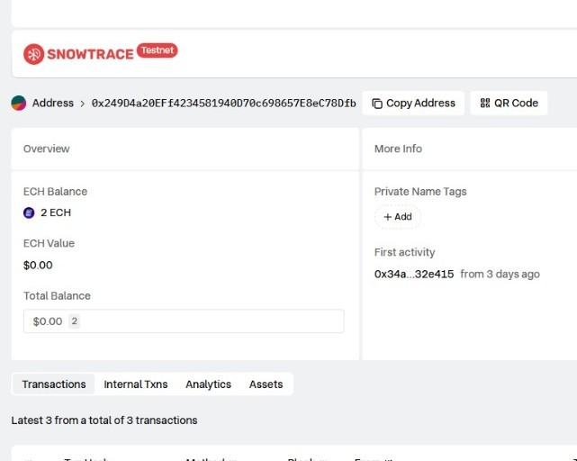

This project is a decentralized application (dApp) developed and tested on a blockchain testnet. It involves smart contract deployment, wallet address management, and transaction verification using Snowtrace Explorer. The application implements wallet-blockchain interactions, the sending and receiving of crypto assets, and real-time monitoring of transactions and balances. The project aims to provide an understanding of the dApp development workflow and serve as a foundation for building secure and well-structured Web3 applications.